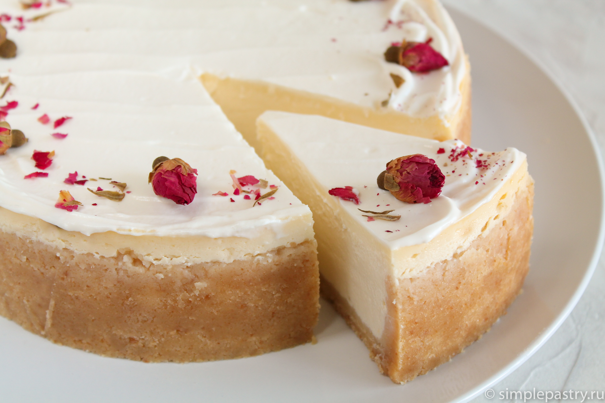

Чизкейк — классическое блюдо американской кухни, которое прочно вошло в меню кафешек всего мира. Его достаточно просто готовить (если чётко следовать всем инструкциям в рецепте), а в результате получается невероятно вкусный и нежный десерт. Мы будем делать классику жанра — Чизкейк Нью-Йорк. Попробуем приготовить?
Самое сложное в приготовлении чизкейка — найти подходящий творожный (сливочный) сыр. По аутентичным рецептам используется сыр «Филадельфия» (Philadelphia). Главный недостаток этого варианта — этот сыр сейчас очень трудно достать в России. Поэтому подбираем сливочный сыр по мере возможности. Никакие плавленые сыры, творог, сметана и Маскарпоне не подходят. А уже тем более Creme Bonjour и прочие малополезные псевдосыры.
Общее время приготовления чизкейка: 10-12 часов (с учётом его «созревания» в холодильнике)!
Ингредиенты
- печенье песочное 300 г
- масло сливочное 100 г
- сыр сливочный 600 г
- сахар 150 г
- яйца 3 шт.
- сливки 30-35% 200 мл
Вместо жирных сливок можно использовать сливки 20% или даже 10%, но при этом немного уменьшится сливочный вкус.
Количество ингредиентов рассчитано для выпекания в форме диаметром 22-24 см, для форм 26-28 см количество ингредиентов увеличиваем в 1,5-2 раза, если, конечно, вы не любите низкий чизкейк. Напишу для тех кто ленится считать: печенье песочное 500 г масло сливочное 166 г сыр сливочный 1 кг сахар 250 г яйца 5 шт. сливки 30-35% 333 мл
Форму, конечно, нужно использовать разъёмную.
Если собираетесь готовить вариант чизкейка без бортиков, только с песочной основой, то используйте 150 г печенья и 50 г масла.
Вес чизкейка на выходе примерно 1,5 кг.
Приготовление
Подготавливаем все необходимые ингредиенты для приготовления чизкейка Нью-Йорк. Яйца (3 шт.), сыр (600 г), сливки (200 мл) и масло (100 г) достаём из холодильника заранее, за полчаса до готовки и оставляем их «нагреваться» до комнатной температуры.

Минут через 30 берёмся за основу — песочный слой. Для этого берём любое песочное печенье (300 г), какое только нравится. Светлое, тёмное, с орехами — любое. Я использовал детское печенье, в его составе сливочное масло, а не маргарин. Мелочь, а приятно. Можно приготовить самому: классическое песочное печенье или песочное печенье на растительном масле.
Готовим основу. Для этого нужно перемолоть печенье в крошку. Самые простые способы — блендер (измельчитель) или кухонный комбайн. Способ чуть сложнее: крошим и прокатываем скалкой печенье, убранное в пакет.

К этому моменту наше масло самостоятельно растаяло, стало пластичным и готово к дальнейшей работе. Я не рекомендую масло растапливать, так как оно распределяется в песочной крошке в виде капель, плохо удерживается и при выпекании будет вытекать. Соединяем крошку и масло. Должна получиться сыпучая масса.

Высыпаем нашу заготовку в форму. Лучше всего использовать разъёмную, у меня форма диаметром 24 см. Утрамбовываем равномерный слой чем-то плоским — например дном алюминиевой кружки. Можно делать с бортиками, можно — без, я люблю когда чизкейк с бортиком. Высоту бортиков регулируем самостоятельно. Готовую основу ставим на 5-10 минут в духовку, разогретой до 180-200°С. После этого вытаскиваем из духовки, немного выравниваем стенки и дно и оставляем остывать.

Теперь собственно сам чизкейк. Хорошо размешиваем творожный/сливочный сыр с сахаром (150 г) до однородности. Проще всего это делать миксером. Но! Нам необходимо только равномерно перемешать, не взбивать! Так что делаем всё на минимальной скорости, иначе будут появляться пузырьки и наш чизкейк будет похож на дырявый сыр.

По одному добавляем яйца. Очень хорошо перемешиваем массу после каждого введения яйца. Не торопимся. Стараемся не слишком взбить массу — если смесь будет перенасыщена пузырьками воздуха, при выпечке чизкейк может вздуться и треснуть. Поэтому работаем теперь не миксером, а лопаточкой или венчиком.

И в самом конце добавляем сливки (взбивать их не нужно) и снова аккуратно перемешиваем. Постучим ёмкостью об стол пару-тройку раз, пусть выйдет максимальное количество пузырьков воздуха, которые находятся внутри массы. Сама чиз-масса может получаться разной консистенции: от жидкой текучей до довольно плотной как сметана. Причины: разной плотности и влажности сыр, а также категория яиц. Я, например, используя яйца С0.

Выливаем начинку в форму с основой и аккуратно и ровно распределяем по всей площади. Слегка постучим формой об стол пару раз (так мы избежим пузырьков и неоднородности теста, так как те пузырьки, что близко к верхней границы чизкейка выйдут наружу).

Далее будем чизкейк выпекать. Тут необходимо немного отклониться в теоретическую часть, но оно того стоит. Под выпечкой чизкейка подразумевается стабилизация чиз-массы, то есть её уплотнение, чтобы при разрезании она держала форму. Собственно именно для этого в составе яйца. Во всяких разных рецептах в интернете предлагается форму заворачивать в фольгу, заливать в противень воду и по сути выпекать на водяной бане. Это делается для того, чтобы равномерно распределять температуру внутри духовки, чтобы чизкейк не сильно поднимался и не трескался. Но в итоге мы имеет лишь мокрую основу и сложность приготовления. Мы будем выпекать так: сначала ставим в разогретую до 200°С духовку на 10 минут, а затем убавляем температуру до 110°С и доводим чизкейк до готовности около часа. Всё зависит от некоторых особенностей, например, от диаметра вашей формы. Здесь ориентируйтесь так — центр чизкейка должен чуть подрагивать (если подвигать форму), но не быть слишком жидким. У меня на выпекание чизкейка в форме 24 см ушло 10 мин + 1 час. Обычно противень я ставлю чуть ближе к низу духовки. Если вы боитесь, что верх чизкейка у вас подгорит, то заранее подготовьте лист фольги, чтобы в случае чего накрыть форму сверху. Чизкейк любит когда за ним наблюдают в то время когда он находится в духовке, это важно не пренебрегайте этим. Следить постоянно не нужно, но раз в 10-15 минут заглянуть и посмотреть через стекло на состояние чизкейка надо бы. Если ближе к концу готовки верх чизкейка начал поднимать и трескаться — то это явный признак чрезмерного выпекания, то есть чизкейк передержали.

Итак, чизкейк в духовке вроде бы испёкся. Но это ещё не всё. Важно правильно охладить чизкейк. Если его быстро вытащить из духовки, то от резкого перепада температур наверняка он треснет. А зачем нам треснутый чизкейк?! Охлаждать чизкейк нужно в несколько этапов. Сразу после выключения духовки его необходимо оставить на 40-60 минут в духовке, затем приоткрыть дверцу духовки и оставить ещё на 30 минут. Далее достаём чизкейк и оставляем остывать уже при комнатной температуре на 1 час. Далее нужно провести ножом вдоль стенок формы, и уже после этого ставить в холодильник. Постепенное охлаждение в значительной степени снижает риск появления на десерте трещин!

Чизкейк Нью-Йорк получается очень нежным и однородным. Текстура у него как у очень нежной творожной смеси. Для полноты вкуса чизкейк должен находится в холодильнике как минимум 6-8 часов, я всегда оставляю на ночь и утро будет радостнее от великолепного десерта к кофе. Тут и потренировать силу воли опять же можно. Пик вкуса чизкейка приходится на третий день, это не шутка. Надо полагать, что после выключения духовки процесс приготовления чизкейка не окончен. При охлаждении и нахождении в холодильнике чизкейк продолжает «готовится», но уже в несколько ином от привычного нам понимании смысле.
Перед подачей я настоятельно рекомендую подержать чизкейк в морозильной камере пару часов, от этого он станет ещё вкуснее. Ну, и нож, которым будете разрезать желательно тоже охладить, чтобы срез был текстурным, а не растаявшим. По желанию, можно выложить на чизкейк кусочки сочных спелых фруктов или ягод. Или подавать классически — чистый чизкейк с листиком мяты и небольшим количеством клубничного соуса. Приятного аппетита!
